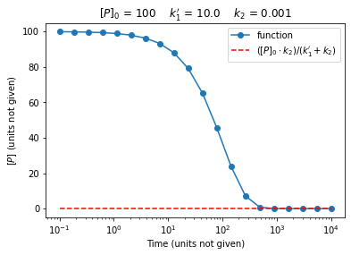

Testing and Debugging in Python
Contents
Testing and Debugging in Python¶
Reference: Chapter 6 of Computational Nuclear Engineering and Radiological Science Using Python, R. McClarren (2018)
Learning Objectives¶
After studying this notebook, completing the activities, and asking questions in class, you should be able to:
Create
assertstatements andtry-exceptblocks of codeEmbrace the “debugging mindset” and test code you write. We strongly recommend creating a handful of unit tests for each function you write, especially for complex codes (e.g., mini-projects)
Testing Your Code¶
Anytime you write code, you want to make sure that it accomplishes the desired task.
Motivating Example¶
Through an example, we will demonstrate several strategies for systematically testing code.
Phenolphthalein is a base indicator (it turns a pretty purple), but in the presence of a strong base it will fade over time. This is a reversible reaction: pseudo first-order in the forward (fading) direction and first-order in the reverse direction. The rate expression is:
where \(k_{1}' = k_{1} \cdot [OH^-]\) is the pseudo first-order rate. \([POH]\) is only produced from this reaction, thus we have the mass balance:
With the initial conditions:
We can solve these equations to get the solution:
Let’s examine a Python function to calculate the solution.
import numpy as np
def P_conc(t, P0, k1prime, k2, LOUD=False):
""" Computes the concentration of phenolphthalein as a function of time
Args:
t: time, either a scalar (float) or vector (numpy array)
P0: initial concentration of phenolphthalein
k1prime: forward reaction rate constant
k2: reverse reaction rate constant
Returns:
concentration, either a scalar (float) or vector (numpy array) depending on arg. t
"""
# compute first fraction in formula
frac1 = k2/(k1prime + k2)
# compute second fraction in formula
frac2 = k1prime/(k1prime + k2)
# compute term that goes into exponent
pre_expon = -(k1prime * k2)*t
# evaluate exponent
expon = np.exp(pre_expon)
# combine together
P = P0*(frac1 + frac2*expon)
if LOUD:
print("frac1 = ",frac1)
print("frac2 = ",frac2)
print("pre_expon = ",pre_expon)
print("expon = ",expon)
print("P = ",P)
# return final value
return P
We will now go through several tests to see if our function behaves correctly. Note: There are a few intentional mistakes above to make this exercise more interesting.
Test 0: Takes Inputs as Advertised?¶
Does the function return a single value if input t is a scalar and return a numpy array if t is a vector?
# Check with scalar t
print(P_conc(0.0,1.0,1.0,1.0))
1.0
# Check with vector t
print(P_conc(np.zeros(3),1.0,1.0,1.0))
[1. 1. 1.]
Good. The time input works as advertised.
Test 1: Initial Condition¶
First, let’s check if our function returns the initial condition at \(t=0\). From the formula above, we expect:
Let’s start by defining a function for this test case. Notice the first input to our function is a function (see Chap 01-04 Notebook).
import math
def test1(Pfunc, P0, k1prime, k2):
''' Initial condition test
Args:
Pfunc: a Python function to calculate P concentration. Expects 4 inputs.
P0: initial condition to test
k1prime: rate constant to test
k2: rate constant to test
Returns:
Boolean (true or false) indicates if our function passed or failed the test
Side Effect:
Prints test parameters and message to screen
'''
print("Testing initial condition with following specifications:")
print("P0 = ",P0," k1prime = ",k1prime, " k2 = ",k2)
Pcalc = Pfunc(0.0, P0, k1prime, k2)
print("Calculate value of P = ",Pcalc)
if math.fabs(Pcalc - P0) < 1E-8:
print("Test passed.\n")
return True
else:
print("Something is wrong. You need to debug your code.\n")
return False
By defining this test as a function, we can quickly test several values for the input parameters.
test1(P_conc,1.0,1.0,1.0)
test1(P_conc, 5.0, 1.0, 0.001)
Testing initial condition with following specifications:
P0 = 1.0 k1prime = 1.0 k2 = 1.0
Calculate value of P = 1.0
Test passed.
Testing initial condition with following specifications:
P0 = 5.0 k1prime = 1.0 k2 = 0.001
Calculate value of P = 5.000000000000001
Test passed.
True
Test 2: Asymptotics¶
Let’s examine the solution again, but consider \(t \rightarrow \infty\).
Let’s start by plotting \([P]\) as a function of time and see if it converges:
import matplotlib.pyplot as plt
#this line is only needed in iPython notebooks
%matplotlib inline
def test2(Pfunc, P0, k1prime, k2):
'''Asymptotics test
Args:
Pfunc: a Python function to calculate P concentration. Expects 4 inputs.
P0: initial condition to test
k1prime: rate constant to test
k2: rate constant to test
Returns:
Boolean (true or false) indicates if our function passed or failed the test
Side Effect:
Creates a plot. Prints if test passed or failed.
'''
# Generate 20 points from 10^-1 to 10^4
t = np.logspace(-1,4,20)
P = P_conc(t, P0, k1prime, k2)
P_infty = P0*k2/(k1prime + k2)
# plot calculated value
plt.semilogx(t,P,'o-',label="function")
# plot calculated asymptotic value
plt.semilogx(t,P_infty*np.ones(len(t)),color='r',linestyle="--",label="$([P]_0 \cdot k_{2}) / (k_{1}'+k_{2})$")
# label plot
plt.xlabel('Time (units not given)')
plt.ylabel('$[P]$ (units not given)')
plt.title("$[P]_0$ = " + str(P0) + " $k_1'$ = " + str(k1prime) + " $k_2$ = " + str(k2))
plt.legend()
plt.show()
# check if solution converges to asymptotic value
if math.fabs(P[-1] - P_infty) < 1E-6:
# Note: P[-1] accesses the last value in array P
print("Test Passed.")
return True
else:
print("Test Failed. Either debug code or increase time in test.")
return False
test2(P_conc, 100, 10.0, 0.001)

Test Passed.
True
Test 3: Check a Few Inputs¶
We can calculate with pencil, paper and a calculator values for \([P]\) for a few sets of inputs. We can then test if our Python code is close.
For simplicity, let’s consider \(t=1\), \(P[0] = 1\), \(k_1' = 1\), \(k_2 = 1\).
Combine it all together:
Hint: Remember, do not use an exact equality with floating point numbers. Instead, we check if the answers agree within a tolerance. See Chap 01-02 and 01-03 Notebooks for more details.
# Define test 3 as a function
def test3(Pfunc):
'''Test function for known solution with t=1, [P0] = 1, k1prime = 1, k2 = 1
Arg:
Pfunc: a Python function to calculate P concentration. Expects 4 inputs.
Returns:
Boolean (true or false) indicates if our function passed or failed the test
Side Effect:
Prints test parameters and message to screen
'''
# Notice how using the keyword arguments makes the code very clear
P = Pfunc(t=1.0,P0=1.0,k1prime=1.0,k2=1.0)
if math.fabs(P - 0.56766764161) < 1E-6:
print("Passed Test 3.")
return True
else:
print("Failed Test 3. Recreate your calculations and debug your code.")
return False
# Run test
test3(P_conc)
Failed Test 3. Recreate your calculations and debug your code.
False
Debugging¶
Now that we’ve identified that our code has a bug, the process of finding that error is called debugging. Given that we ran three tests, and two of them passed we can use how the tests are different to identify where the bug might be.
We’ll repeat the formula and function again:
import numpy as np
def P_conc(t, P0, k1prime, k2, LOUD=False):
""" Computes the concentration of phenolphthalein as a function of time
Args:
t: time, either a scalar (float) or vector (numpy array)
P0: initial concentration of phenolphthalein
k1prime: forward reaction rate constant
k2: reverse reaction rate constant
Returns:
concentration, either a scalar (float) or vector (numpy array) depending on arg. t
"""
# compute first fraction in formula
frac1 = k2/(k1prime + k2)
# compute second fraction in formula
frac2 = k1prime/(k1prime + k2)
# compute term that goes into exponent
pre_expon = -(k1prime * k2)*t
# evaluate exponent
expon = np.exp(pre_expon)
# combine together
P = P0*(frac1 + frac2*expon)
if LOUD:
print("frac1 = ",frac1)
print("frac2 = ",frac2)
print("pre_expon = ",pre_expon)
print("expon = ",expon)
print("P = ",P)
# return final value
return P
Debugging is a Mindset¶
To properly identify the bug you need to think about
- How is the code failing?
- What is the code doing correctly?
- What pieces of the code are most likely to have an error?
Moreover, your best tool for debugging is the print function. When in doubt, have the code print out what happens after every line and check that with your intuition/expectation.
When in doubt, print it (all) out!
Notice that we used the LOUD keyword to help us quick toggle print statements on and off. You should always use this trick in this class.
Let’s use the print statements to walk through the tests.
Test 1¶
Test 1 checks that we get the initial condition at \(t=0\). We expect that prexpon evaluates to 0.0 and expon evaluates to 1.0. Let’s see if this is happening:
P_conc(t=0.0, P0=1.0, k1prime = 1.0, k2 = 1.0, LOUD = True)
frac1 = 0.5
frac2 = 0.5
pre_expon = -0.0
expon = 1.0
P = 1.0
1.0
With expon at 1.0, Test 1 checks that frac1 and frac2 sum to 1.0, which they do. Thus, it makes sense that Test 1 passes.
Test 2¶
Test 2 checks for the correct properties as \(t \rightarrow \infty\). Let’s look at the output with t set to a huge number.
P_conc(t=1E7, P0=1.0, k1prime = 1.0, k2 = 2.0, LOUD = True)
frac1 = 0.6666666666666666
frac2 = 0.3333333333333333
pre_expon = -20000000.0
expon = 0.0
P = 0.6666666666666666
0.6666666666666666
As expected, with t set to \(10^7\), expon evaluates to 0.0. This kills frac2. The calculated value for P matches frac1, which we expect.
Test 3¶
Now let’s compare the intermediate values we calculated by hand in Test 3 to those reported below:
P_conc(t=1.0, P0=1.0, k1prime = 1.0, k2 = 1.0, LOUD = True)
frac1 = 0.5
frac2 = 0.5
pre_expon = -1.0
expon = 0.36787944117144233
P = 0.6839397205857212
0.6839397205857212
import numpy as np
# Find the bug and fix this function
def P_conc_fixed(t, P0, k1prime, k2, LOUD=False):
""" Computes the concentration of phenolphthalein as a function of time
Args:
t: time, either a scalar (float) or vector (numpy array)
P0: initial concentration of phenolphthalein
k1prime: forward reaction rate constant
k2: reverse reaction rate constant
Returns:
concentration, either a scalar (float) or vector (numpy array) depending on arg. t
"""
# compute first fraction in formula
frac1 = k2/(k1prime + k2)
# compute second fraction in formula
frac2 = k1prime/(k1prime + k2)
# compute term that goes into exponent
pre_expon = -(k1prime + k2)*t
# evaluate exponent
expon = np.exp(pre_expon)
# combine together
P = P0*(frac1 + frac2*expon)
if LOUD:
print("frac1 = ",frac1)
print("frac2 = ",frac2)
print("pre_expon = ",pre_expon)
print("expon = ",expon)
print("P = ",P)
# return final value
return P
# Rerun the tests
print("\nTEST 1...")
test1(P_conc_fixed,1.0,1.0,1.0)
test1(P_conc_fixed, 5.0, 1.0, 0.001)
print("\nTEST 2...")
test2(P_conc_fixed, 100, 10.0, 0.001)
print("\nTEST 3...")
test3(P_conc_fixed)
TEST 1...
Testing initial condition with following specifications:
P0 = 1.0 k1prime = 1.0 k2 = 1.0
Calculate value of P = 1.0
Test passed.
Testing initial condition with following specifications:
P0 = 5.0 k1prime = 1.0 k2 = 0.001
Calculate value of P = 5.000000000000001
Test passed.
TEST 2...

Test Passed.
TEST 3...
Passed Test 3.
True
# Removed autograder test. You may delete this cell.
Write your answer here:
Assertions¶
In life it pays to be assertive. The same is true in programming. Let’s try an example.
test_P = P_conc(t=10.0, P0=-10, k1prime=1, k2=1)
print("With negative P0, P(t=10) =", test_P)
With negative P0, P(t=10) = -5.000226999648812
The code worked, but the answer is non-sensical. We’d like to tell the user that P_calc was called with an improper value. We could just change the help text to indicate that each input needs to be greater than zero.
import numpy as np
def P_conc_docs(t, P0, k1prime, k2, LOUD=False):
""" Computes the concentration of phenolphthalein as a function of time
Args:
t: time, either a scalar (float) or vector (numpy array)
P0: initial concentration of phenolphthalein, MUST BE POSITIVE
k1prime: forward reaction rate constant, MUST BE POSITIVE
k2: reverse reaction rate constant, MUST BE POSITIVE
Returns:
concentration, either a scalar (float) or vector (numpy array) depending on arg. t
"""
# compute first fraction in formula
frac1 = k2/(k1prime + k2)
# compute second fraction in formula
frac2 = k1prime/(k1prime + k2)
# compute term that goes into exponent. bug has been fixed
pre_expon = -(k1prime + k2)*t
# evaluate exponent
expon = np.exp(pre_expon)
# combine together
P = P0*(frac1 + frac2*expon)
if LOUD:
print("frac1 = ",frac1)
print("frac2 = ",frac2)
print("pre_expon = ",pre_expon)
print("expon = ",expon)
print("P = ",P)
# return final value
return P
help(P_conc_docs)
#the result is the same
test_P = P_conc_docs(t=10.0, P0=-10, k1prime=1, k2=1)
print("With negative P0, P(t=10) =", test_P)
Help on function P_conc_docs in module __main__:
P_conc_docs(t, P0, k1prime, k2, LOUD=False)
Computes the concentration of phenolphthalein as a function of time
Args:
t: time, either a scalar (float) or vector (numpy array)
P0: initial concentration of phenolphthalein, MUST BE POSITIVE
k1prime: forward reaction rate constant, MUST BE POSITIVE
k2: reverse reaction rate constant, MUST BE POSITIVE
Returns:
concentration, either a scalar (float) or vector (numpy array) depending on arg. t
With negative P0, P(t=10) = -5.000000010305769
Well the result is the same: if the user doesn’t respect the instruction for the function inputs, the function will behave strangely. It could be even worse:
test_P = P_conc_docs(t=10.0, P0=-10, k1prime=0.0, k2=0.0)
print("With negative k1prime and negative k2, P(t=10) =", test_P)
---------------------------------------------------------------------------
ZeroDivisionError Traceback (most recent call last)
Input In [17], in <cell line: 1>()
----> 1 test_P = P_conc_docs(t=10.0, P0=-10, k1prime=0.0, k2=0.0)
2 print("With negative k1prime and negative k2, P(t=10) =", test_P)
Input In [15], in P_conc_docs(t, P0, k1prime, k2, LOUD)
4 """ Computes the concentration of phenolphthalein as a function of time
5
6 Args:
(...)
13 concentration, either a scalar (float) or vector (numpy array) depending on arg. t
14 """
15 # compute first fraction in formula
---> 16 frac1 = k2/(k1prime + k2)
18 # compute second fraction in formula
19 frac2 = k1prime/(k1prime + k2)
ZeroDivisionError: float division by zero
This is where the assert statement comes in. It can assure that the arguments to the function are what they should be.
import numpy as np
def P_conc_assert(t, P0, k1prime, k2, LOUD=False):
""" Computes the concentration of phenolphthalein as a function of time
Args:
t: time, either a scalar (float) or vector (numpy array)
P0: initial concentration of phenolphthalein, MUST BE POSITIVE
k1prime: forward reaction rate constant, MUST BE POSITIVE
k2: reverse reaction rate constant, MUST BE POSITIVE
Returns:
concentration, either a scalar (float) or vector (numpy array) depending on arg. t
"""
assert (P0 >0)
assert (k1prime > 0)
assert (k2 >0)
assert (k1prime + k2 > 1E-10)
# compute first fraction in formula
frac1 = k2/(k1prime + k2)
# compute second fraction in formula
frac2 = k1prime/(k1prime + k2)
# compute term that goes into exponent. bug has been fixed
pre_expon = -(k1prime + k2)*t
# evaluate exponent
expon = np.exp(pre_expon)
# for some problems, it makes sense to also apply assert to intermediate values
# combine together
P = P0*(frac1 + frac2*expon)
if LOUD:
print("frac1 = ",frac1)
print("frac2 = ",frac2)
print("pre_expon = ",pre_expon)
print("expon = ",expon)
print("P = ",P)
# return final value
return P
test_P = P_conc_assert(t=10.0, P0=1.0, k1prime=0.0, k2=0.0)
print("With negative k1prime and negative k2, P(t=10) =", test_P)
---------------------------------------------------------------------------
AssertionError Traceback (most recent call last)
<ipython-input-19-5da5158ce7f1> in <module>()
----> 1 test_P = P_conc_assert(t=10.0, P0=1.0, k1prime=0.0, k2=0.0)
2 print("With negative k1prime and negative k2, P(t=10) =", test_P)
<ipython-input-18-43e0fdffa38f> in P_conc_assert(t, P0, k1prime, k2, LOUD)
14
15 assert (P0 >0)
---> 16 assert (k1prime > 0)
17 assert (k2 >0)
18 assert (k1prime + k2 > 1E-10)
AssertionError:
Notice that python tells us which assertion failed so we know that the function call had a bad value of k1prime. The program still fails, but it tells us exactly why. We can also use assertions to test that the code behaves the way we expect.
These types of assert statements can help you debug later on down the road.
Error Handling¶
There are times when you want to handle an error gracefully. When a program is running, if it encounters an error it can raise an exception. The exception will give some indication of what the error is. In Python, you can place some code in a special block of code called a try block. After the try block, the types of exception to handle are listed using except blocks. Only the exceptions that are explicitly handled are caught.
One type of exception is the ZeroDivisionError that is raised when a number is divided by zero. First, we will look at an uncaught exception:
z = 10.5/0
---------------------------------------------------------------------------
ZeroDivisionError Traceback (most recent call last)
<ipython-input-20-7351058cd412> in <module>()
----> 1 z = 10.5/0
ZeroDivisionError: float division by zero
try:
z = 10.5/0
except ZeroDivisionError:
print("You cannot Divide by zero")
You cannot Divide by zero
One thing that happens when you catch a raised exception, is that the program will continue on. This can be a useful feature, but often times you want to catch an exception, print a useful error message, and then have the program end. This can be done by adding a raise statement to the end of the except block. The raise statement tells Python to still fail due to the exception, despite the fact that we caught it. This changes the previous example by one line, but changes the output and forces the program to quit:
try:
z = 10.5/0
except ZeroDivisionError:
print("You cannot divide by 0, exiting")
raise # kill the program
You cannot divide by 0, exiting
---------------------------------------------------------------------------
ZeroDivisionError Traceback (most recent call last)
<ipython-input-24-e0457518558c> in <module>()
1 try:
----> 2 z = 10.5/0
3 except ZeroDivisionError:
4 print("You cannot divide by 0, exiting")
5 raise # kill the program
ZeroDivisionError: float division by zero
Let’s see this applied to our reaction kinetics example.
import numpy as np
def P_conc_assert2(t, P0, k1prime, k2, LOUD=False):
""" Computes the concentration of phenolphthalein as a function of time
Args:
t: time, either a scalar (float) or vector (numpy array)
P0: initial concentration of phenolphthalein, MUST BE POSITIVE
k1prime: forward reaction rate constant, MUST BE POSITIVE
k2: reverse reaction rate constant, MUST BE POSITIVE
Returns:
concentration, either a scalar (float) or vector (numpy array) depending on arg. t
"""
try:
assert (P0 >0)
assert (k1prime > 0)
assert (k2 >0)
assert (k1prime + k2 > 1E-10)
except AssertionError:
print("Input Parameters are not all positive.")
print("P0 =",P0)
print("k1prime =",k1prime)
print("k2 =",k2)
raise # kill the program
except:
print("An unexpected error occurred when",
"checking the function parameters")
raise # kill the program
# compute first fraction in formula
frac1 = k2/(k1prime + k2)
# compute second fraction in formula
frac2 = k1prime/(k1prime + k2)
# compute term that goes into exponent. bug has been fixed
pre_expon = -(k1prime + k2)*t
# evaluate exponent
expon = np.exp(pre_expon)
# for some problems, it makes sense to also apply assert to intermediate values
# combine together
P = P0*(frac1 + frac2*expon)
if LOUD:
print("frac1 = ",frac1)
print("frac2 = ",frac2)
print("pre_expon = ",pre_expon)
print("expon = ",expon)
print("P = ",P)
# return final value
return P
With this function, if it is passed a negative value, it will raise an AssertionError. The code catches this error, prints out the input parameters to the user, and then exits by raising the exception.
test_P = P_conc_assert2(t=10.0, P0=1.0, k1prime=0.0, k2=0.0)
print("With negative k1prime and negative k2, P(t=10) =", test_P)
Input Parameters are not all positive.
P0 = 1.0
k1prime = 0.0
k2 = 0.0
---------------------------------------------------------------------------
AssertionError Traceback (most recent call last)
<ipython-input-23-01ec377f196b> in <module>()
----> 1 test_P = P_conc_assert2(t=10.0, P0=1.0, k1prime=0.0, k2=0.0)
2 print("With negative k1prime and negative k2, P(t=10) =", test_P)
<ipython-input-22-6f0171c1ee01> in P_conc_assert2(t, P0, k1prime, k2, LOUD)
14 try:
15 assert (P0 >0)
---> 16 assert (k1prime > 0)
17 assert (k2 >0)
18 assert (k1prime + k2 > 1E-10)
AssertionError:
Also, the function has a generic except statement that will catch any other errors in the try block. Because the try block involves comparison of numbers, if we pass a string as a parameter, there will be an error when checking if that parameter is greater than 0. This exception will be caught by the generic except statement, and the code prints out an error message, and then quits:
test_P = P_conc_assert2(t=10.0, P0="hello world", k1prime=0.0, k2=0.0)
print("With negative k1prime and negative k2, P(t=10) =", test_P)
An unexpected error occurred when checking the function parameters
---------------------------------------------------------------------------
TypeError Traceback (most recent call last)
<ipython-input-26-e4e13e3a25ad> in <module>()
----> 1 test_P = P_conc_assert2(t=10.0, P0="hello world", k1prime=0.0, k2=0.0)
2 print("With negative k1prime and negative k2, P(t=10) =", test_P)
<ipython-input-22-6f0171c1ee01> in P_conc_assert2(t, P0, k1prime, k2, LOUD)
13 """
14 try:
---> 15 assert (P0 >0)
16 assert (k1prime > 0)
17 assert (k2 >0)
TypeError: '>' not supported between instances of 'str' and 'int'